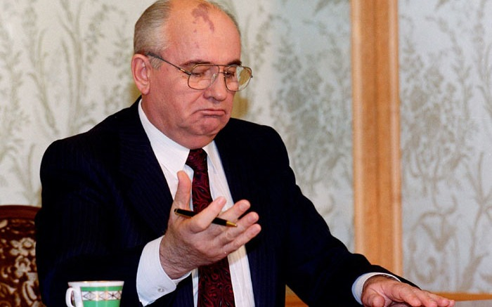
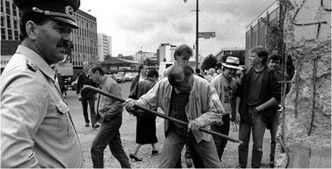

(1945 - 1991)
(1991 - 2000)
Là nước chịu tổn thất nặng nề nhất trong CTTGT2, mặc dù với tư cách là nước chiến thắng.
27 triệu người chết
1710 thành phố
hơn 7 vạn làng mạc
gần 32 000 xí nghiệp
Bị tàn phá nặng nề
Trước tình hình đó, Liên Xô vừa phải chú ý đến nhiệm vụ củng cố quốc phòng, an ninh vừa phải thực hiện nhiệm vụ hàn gắn vết thương chiến tranh và phát triển kinh tế.
| Hoàn thành thắng lợi kế hoạch 5 năm, phục hồi kinh tế (1946 – 1950) trong vòng 4 năm 3 tháng. |
| Công nghiệp: được phục hồi, năm 1947 đạt mức trước chiến tranh. |
| Nông nghiệp: Một số ngành sản xuất nông nghiệp cũng vượt mức trước chiến tranh, thu nhập quốc dân tăng 66% so với năm 1940 ( kế hoạch dự kiến tăng 38%). |
Năm 1949, Liên Xô chế tạo thành công bom nguyên tử, đánh dấu bước phát triển nhanh chóng của Khoa học – kỹ thuật., phá vỡ thế độc quyền vũ khí nguyên tử của Mỹ.
Liên Xô tiến hành các kế hoạch dài hạn nhằm xây dựng CNXH và đạt nhiều thành tựu to lớn:
1950 – 1975, các nước Đông Âu thực hiện nhiều kế hoạch 5 năm nhằm xây dựng cơ sở vật chất – kỹ thuật của chủ nghĩa xã hội trong tình hình khó khăn và phức tạp.
Khó khăn: Các nước đều xuất phát từ trình độ phát triển thấp (trừ Tiệp Khắc, Cộng hòa Dân chủ Đức), bị các nước đế quốc bao vây kinh tế, các thế lực phản động chống phá.
Thuận lợi: Sự giúp đỡ Liên Xô và sự nỗ lực của nhân dân Đông Âu.
Làm thay đổi cục diện Châu Âu sau chiến tranh thế giới thứ hai, chủ nghĩa xã hội trở thành hệ thống thể chế chính trị quan trọng.
Hội Đồng Tương Trợ Kinh tế (SEV) thành lập ngày 8-1-1949 gồm Liên Xô, Ba Lan, Tiệp Khắc, Anbani, Bung ga ri, Hungari, Rumani sau thêm CHDC Đức, Mông Cổ, Cuba và Việt Nam.
Đã thúc đẩy các nước XHCN phát triển kinh tế và kỹ thuật, tạo ra cơ sở vật chất kỹ thuật để đẩy mạnh việc việc xây dựng CNXH, nâng cao đời sống nhân dân.
Sau những biến động chính trị lớn ở Đông Âu, những người đứng đầu 2 nước Liên Xô và Mỹ thỏa thuận chấm dứt chiến tranh lạnh (1989), ngày 1-7-1991, tổ chức này ngừng hoạt động.
Tháng 3/1985, M.Gorbachev tiến hành cải tổ đất nước theo đường lối “cải cách kinh tế triệt để”, tiếp theo là cải cách hệ thống chính trị và đổi mới tư tưởng.
| Cuộc khủng hoảng dầu mỏ 1973 nền kinh tế Đông Âu lâm vào tình trạng trì trệ. | Những sai lầm và bế tắc trong công cuộc cải tổ ở Liên Xô và hoạt động phá hoại của các thế lực phản động làm cho cuộc khủng hoảng của các nước Đông Âu ngày càng gay gắt. |
| Sự sụp đổ của Liên Xô và các hoạt động phá hoại của các thế lực phản động làm cho cuộc khủng hoảng thêm gay gắt. | Các nước Đông Âu lần lượt từ bỏ quyền lãnh đạo của Đảng, chấp nhận đa nguyên, đa đảng và tiến hành tổng tuyển cử, chấm dứt chế độ xã hội chủ nghĩa, lập các nước cộng hòa. | Đông Đức sát nhập vào Tây Đức (3-10-1990); SEV giải thể ngày 28-8-1991: Tổ chức Vác xa va giải thể ngày 1-7-1991. |
Bức tường Berlin bị dỡ bỏ, nước Đức tái thống nhất
Tốc độ tăng trưởng bình quan hằng năm GDP luôn âm (1990 : -3.6 %, 1995 : -4.1%)
Kinh tế Liên bang Nga bắt đầu có những tín hiệu phục hồi
Tốc độ tăng trưởng dương (0.5%)
| Kinh tế dần hồi phục và phát triển | Chính trị và xã hội tương đối ổn định | Vị thế quốc tế được nâng cao | Đồng thời tiếp tục khắc phục những trở ngại, giữ vững địa vị của cường quốc Á – Âu. | Tuy vậy vẫn phải đương đầu với nạn khủng bố do các phần tử li khai gây ra |